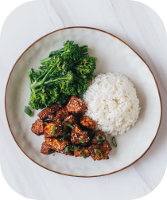
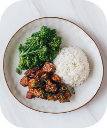

Recipes / Healthy Meals Recipes /
PREP TIME
COOK TIME
TOTAL TIME

 


Press tofu for 30 minutes, then pat dry with a clean kitchen towel. Tear into bite sized pieces using your hands, then pat dry again.
2Preheat air fryer to 420°F / 220°C.
3In a large bowl, mix together garlic powder, onion powder, salt, black pepper and cornstarch. Add tofu pieces and toss until each piece is evenly coated.
4Spray air fryer basket with cooking spray. Then, spread tofu pieces in a single layer in basket, and spray tofu lightly with cooking spray
5Air fry for 8-10 minutes or until tofu pieces are golden and crispy.
6Meanwhile, make the sauce by whisking all the sauce ingredients in a bowl until combined.
7Heat up the sauce in a nonstick skillet over medium-low heat, whisking constantly, until the sauce is thickened and glossy. Remove from heat immediately and let it cool. If it thickens too much too quickly, simply thin it out by whisking in a splash of water.
8When tofu pieces are done, transfer to a large mixing bowl. Drizzle sticky garlic soy sauce all over and toss to coat each piece evenly. Garnish with chopped scallions and sesame seeds and serve immediately. Enjoy!